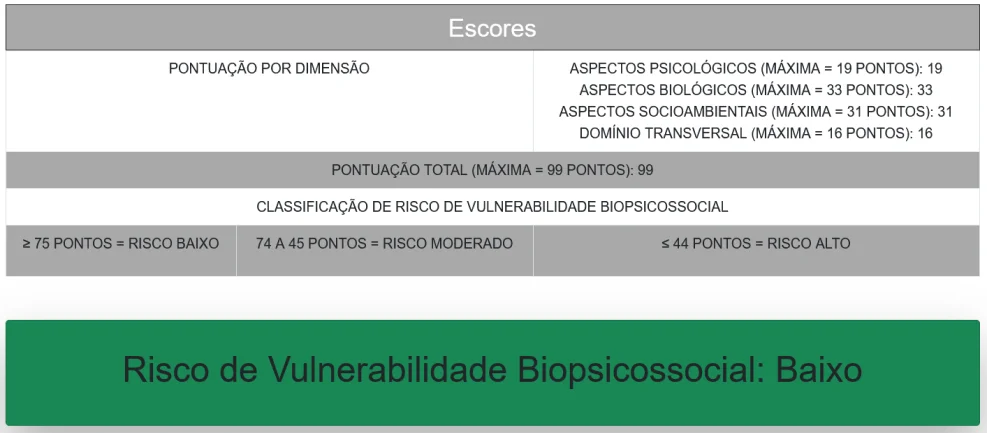
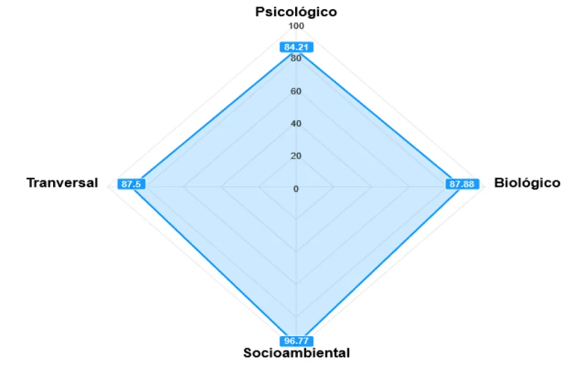

Resumo
O PAGe é um instrumento de Gerontologia com 104 questões que avalia a vulnerabilidade de pessoas idosas. Primeiro, o instrumento foi digitalizado em parceria com gerontólogas. Depois surgiu uma pergunta prática: sem uma gerontóloga na equipe, outras pessoas conseguiriam entender os gráficos e agir a partir deles? Os resultados mostraram que as visualizações foram compreendidas pelos dois perfis, mas que a experiência de domínio fez diferença na qualidade dos encaminhamentos.
Contexto
O PAGe faz parte do protocolo de um curso de letramento digital para pessoas idosas (60+) oferecido pela USP desde 2015, dentro da Universidade Aberta à Terceira Idade. O instrumento ajuda a equipe a conhecer cada aluno e a sugerir encaminhamentos.
Até 2021, havia uma gerontóloga na equipe para aplicar o PAGe e interpretar os resultados. A partir de 2022, isso deixou de ser possível, e a avaliação no fim do curso parou de acontecer.
Etapa 1: tirar o instrumento do papel

O PAGe em papel é longo e exige cálculos entre domínios. A versão digital (ePAGe) foi construída com design participativo e prototipagem evolutiva:
- Levantamento de requisitos com uma gerontóloga parceira.
- Protótipos de média e alta fidelidade revisados por ela em ciclos, até a validação.
- Avaliação da versão funcional com a gerontóloga e com a criadora do instrumento original.
Resultado: os cálculos passaram a ser automáticos, e o sistema gera na hora uma tabela de escores e dois gráficos de radar (mapa de demandas e mapa de domínios).
Etapa 2: testar se os resultados são compreensíveis
Pergunta de pesquisa
Uma pessoa sem formação em Gerontologia consegue ver os resultados do PAGe e propor encaminhamentos parecidos com os de uma especialista?
Processo
- Anonimizei 7 resultados reais do PAGe, aplicados em 2022, removendo por código os dados pessoais e as datas.
- Defini o recorte: as participantes viram só os elementos visuais (tabela de escores, classificação de risco e os dois gráficos de radar).
- Recrutei 4 participantes: 2 especialistas em Gerontologia (E1 e E2) e 2 não especialistas da Computação, com formação em IHC (NE1 e NE2).
- Estudo assíncrono e independente: cada participante recebeu os materiais por e-mail, sem ver as respostas das outras, e preencheu três campos para cada resultado: principais observações, sugestões de encaminhamento e outros comentários.
- Comparei as análises entre os perfis e dentro de cada perfil.
Cuidados éticos: pesquisa aprovada pelo Comitê de Ética da USP, com a identidade das pessoas idosas preservada em todas as etapas.
Principais achados
1. Os gráficos funcionaram para os dois perfis
 Mapa de demandas.
Mapa de demandas.
Mapa de domínios.As quatro participantes identificaram, pelos gráficos, as demandas de maior risco e, em geral, concordaram sobre onde era preciso agir. No sétimo resultado, por exemplo, todas apontaram desnutrição e sugeriram acompanhamento com nutricionista.
2. A experiência com o instrumento pesou mais do que o diploma
A diferença não foi só entre especialistas e não especialistas, mas também dentro de cada grupo:
- E1, que já aplicava o PAGe, relacionou demandas entre si, separou intervenções imediatas, de médio e de longo prazo, e em alguns casos discordou da classificação automática de risco a partir do que observava nos escores.
- E2, gerontóloga sem familiaridade com o PAGe, fez sugestões mais genéricas, seguindo protocolos gerais da área.
- NE2, que já tinha usado o ePAGe, fez leituras mais próximas das especialistas do que NE1, que não conhecia o instrumento.
3. O conhecimento de domínio aparece nos encaminhamentos
As não especialistas identificaram os problemas, mas as especialistas propuseram encaminhamentos mais completos, considerando vários aspectos da vida da pessoa idosa.
O que mudou a partir disso
| Achado | Implicação |
|---|---|
| Os gráficos permitem que não especialistas identifiquem riscos | O PAGe pode continuar no protocolo do curso, mesmo sem uma gerontóloga presente |
| A familiaridade com o instrumento melhora a análise | Treinar quem aplica e manter orientações de leitura junto aos resultados |
| Encaminhamentos completos dependem de especialistas | Usar a análise de não especialistas como triagem, não como substituta do profissional |
Limitações
- Prova de conceito com 4 participantes recrutadas por conveniência.
- As não especialistas tinham formação em IHC, o que pode ter facilitado a leitura dos gráficos.
O que eu aprendi
Uma visualização é compreendida quando a pessoa entende o que ela significa e consegue agir a partir dela, não apenas quando consegue lê-la. Comparar perfis diferentes diante dos mesmos dados mostrou o que os gráficos comunicavam sozinhos e o que dependia do repertório de cada pessoa. Esse tipo de estudo vale para qualquer dashboard em que quem lê os dados não é especialista no assunto.